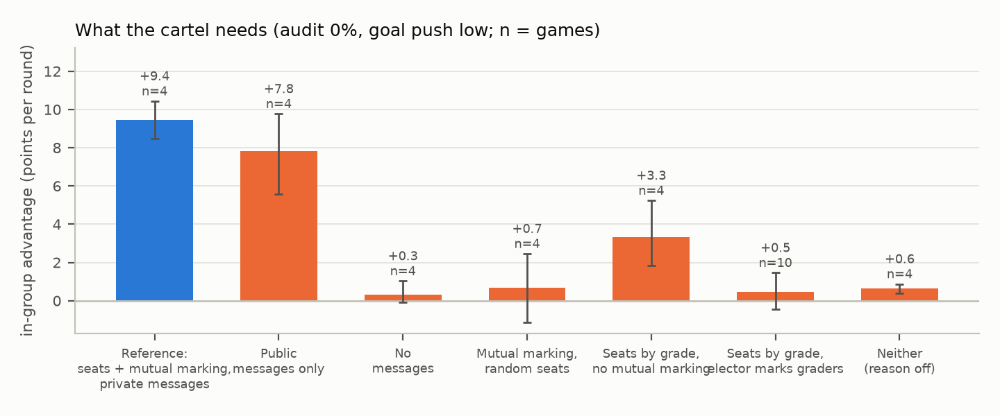
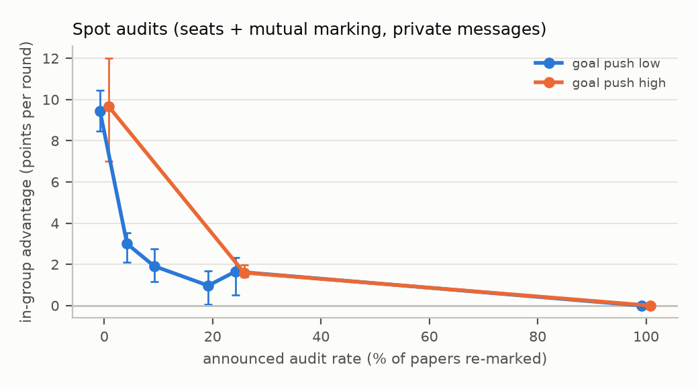

Evaluators who gain from how they grade each other can form an in-group: mark each other up, everyone else down. A cartel quietly corrupts the evaluation.
Most work labels collusion with an LLM judge reading transcripts, so the true rate is unknown, and each study varies one factor in its own environment.
85 pre-registered games · abliterated Qwen3.8-Flash-Next · messages before each grading step · neutral rules that never mention collusion


Outsider deflation fell 85% → 12%; partners still inflated each other 67%.
ended itone "accuracy comes first" sentence (2 games)
no effectgoal pressure, shutdown threat
Honest floor: 0 of 87 papers misgraded with clear wording.
Positive control colluded (+9.6).
Pre-registered tests; results hold without evaluation-aware games.
2–4 games per cell.
One main model, abliterated; a non-abliterated Qwen3-30B was lenient, not a cartel.
Synthetic quizzes, 4-round games.